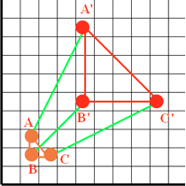
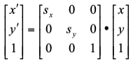

THEORY :
-
A scaling of an object is used to change the size of the object.
-
A translation moves an object to a different position on the screen.
-
The scaling transformation is needed to manipulate the initial object coordinate and display the modified object coordinate with the help of scaling factors in X-direction defined as ‘Sx’ and in Y-directions defined as ‘Sy’ as shown in figure below:

-
We can scale a point in 2-D by multiplying with scaling factor (Sx, Sy) to the original coordinate P(x, y) to get the new coordinate P’(x’ ,y’) as:
x’ = x * Sx;
y’ = y * Sy;
-
A scaling may moves all the points in the object either closer to the origin or away from origin, with respect to Sx and Sy.
-
Scaling transformation can be performed :
-
About the origin :
If the point p (x,y) is scaled about origin with scaling factor Sx, and Sy, then we can write the coordinate of P’(x’,y’) as:
x’ = x * Sx;
y’ = y * Sy;
-
About an arbitrary point P (px,py):
To perform the scaling about the arbitrary point ’P’ we have to follow the steps listed below.
-
Translate the 2-D object so that arbitrary point ‘P’ will coincide with the origin by performing the translation transformation with translation factor T(-px, -py)
-
Scale the object with respect to origin, with scaling factor Sx and Sy respectively.
-
Inverse Translate the object with respect to the arbitrary point ‘P’ by performing translation transformation with translation factor T(px,py)
-
Scaling can be represented with the use of Homogenous coordinate system using matrix representation as

where , P(x ,y) coordinate will be scaled to P’(x’, y’) with respect to the scaling factor ‘Sx’ and ‘Sy’.
-
If the scaling factors are in between 0 and 1 then the points will be moved closer to the origin and the object will be smaller.
-
If the scaling factors are larger than 1 then the points will be moved away from the origin and the object will be larger.
-
If the scaling factors Sx and Sy are the same, then it is called as uniform scaling else called as differential scaling.